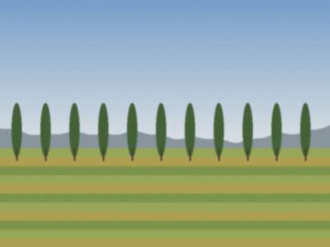
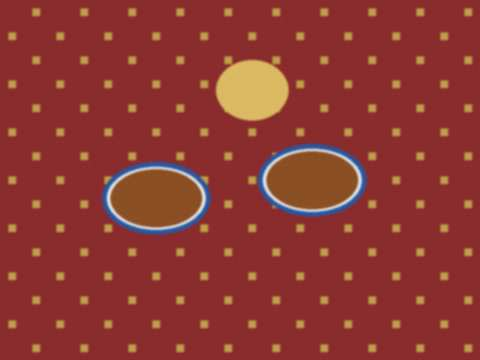

Archive for the ‘Family’ Category
28 August 2009, 22:00
Tomorrow I go to Talas. Everything is in two bags and a sack of jam. Grandmother has put in her old scarf "for the cold of the city". Mama keeps remembering things: "scissors! the thermos! a spoon!". She gave me a spoon from her own set.
Nurbek will take me on the bus (no bicycle). Emil is sulking. Mysyk sat on the first bag and would not get off.
I'm so happy and so sad that I don't know what the word is. Maybe there is one in Iradi.
18 April 2009, 16:00
We made a surprise for Zarina in the school yard: the whole class with a cake and a song, the song was out of tune. Zarina laughed so much that she had to sit on the steps. She said it was the first time since the February of two years ago that she was surprised by something that was good.
She does not talk much about "before". I don't ask. We eat the cake.
8 March 2009, 20:10
The tulips again. This year Daniyar gave me three, one for me, one for Zarina and one for "my mother", he said, so I should give it to her. I asked: does your mother know? He went red like the sign on the bazaar.
Mama accepted the tulip. She said Daniyar has a good heart and a very bad handwriting. She's seen his writing in Emil's notebook.
31 December 2007, 20:15
No tree this year, only a branch in a jar that grandmother decorated with paper stars. It is actually beautiful. We had boorsok and tea and the radio, and the light was on from eight to ten, so we ate by the light, like in grandmother's story.
Zarina came to us with her mother and her brother. They brought dried apricots. Zarina's mother said the New Year is for hope, and then she looked at the branch and said it hopes very well.
29 April 2006, 14:00
Nurbek bought a bicycle from a boy in Aulie-Ata for 600 som, which he saved for a year from helping at the bazaar. It is blue and it has no brakes. "It has legs," he says. He rides it down the street with his feet.
Mama forbids it. Grandmother says in her time they rode donkeys with no brakes either.

The road behind our house, where Nurbek crashed.8 March 2006, 13:00
The boys in our class gave every girl a tulip and a chocolate. Daniyar gave me two tulips but he says it was a mistake. Hmm.
For mama I made a card with a drawing of our house. She put it on the cupboard next to my grandfather's photo. That is the place for the most important things.
Tulips from the bazaar, 30 som each, Nurbek paid.
21 January 2006, 15:10
Grandmother is 72 on Monday. She doesn't want a party, she says a party is a waste of tea. So we made a small one, only the family, and she let us give her a new scarf (green, with roses).
She told us a story from when she was a girl: they had one pair of felt boots for four sisters, so one went out at a time. In winter. The oldest was the most clever, she always said she wanted to stay at home with the baby.

Grandmother and the new scarf, with the good samovar.31 December 2005, 22:30
In two hours it is the New Year. Mama made a table with everything: plov (short rice, stirred, not Uzbek, grandmother is very strict about that), salads, mandarins from the bazaar, a cake I decorated and which looks like a snow hill after an earthquake.
Nurbek wants to go and see the tree on the square with his friends. Mama said NO. Then she said yes if he takes Emil. Then she said no again. They are negotiating.
Happy New Year to everyone who reads this exercise book, both of you. ♥